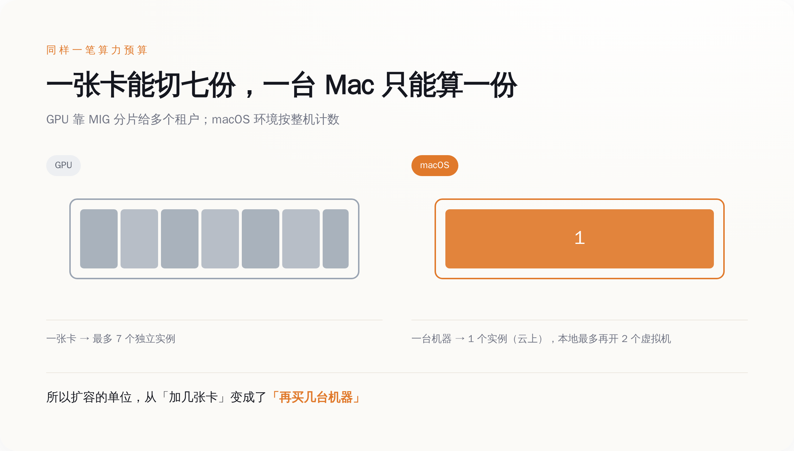
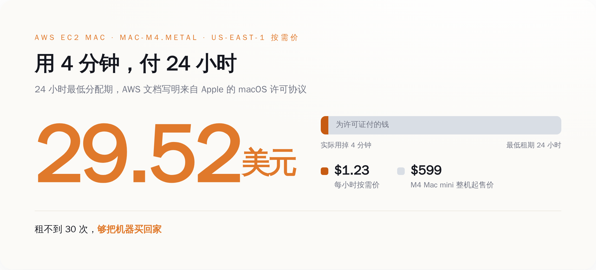
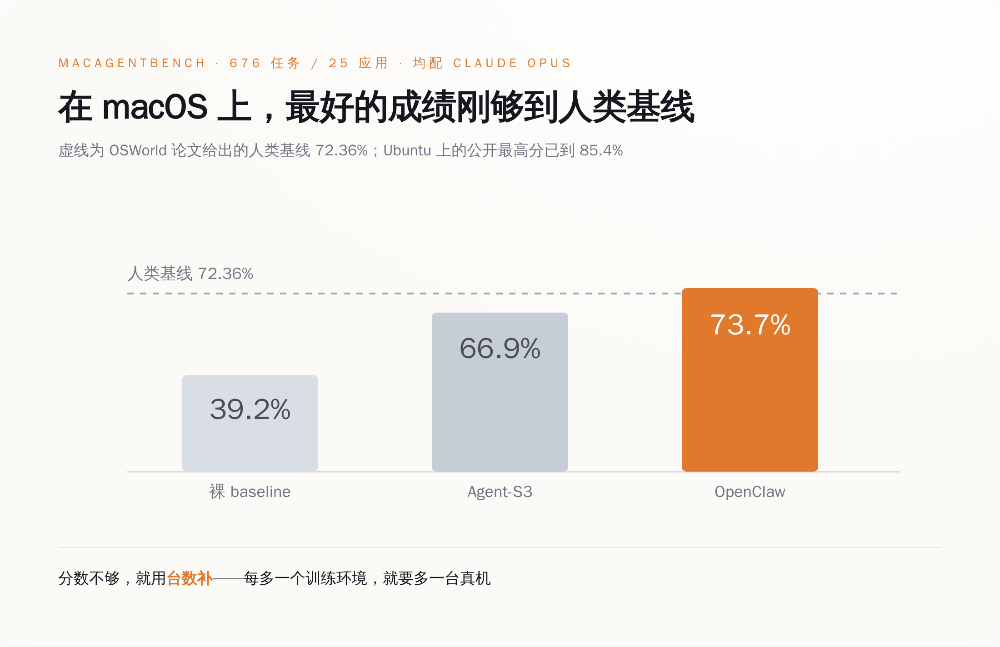
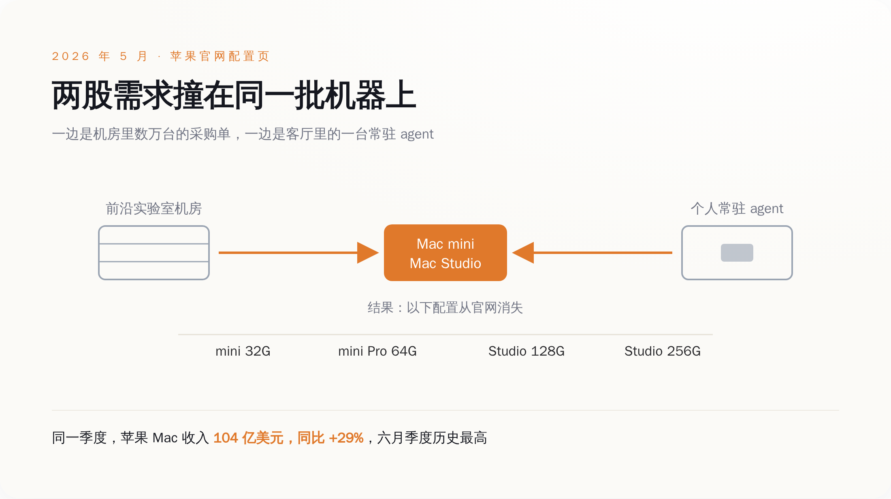

一、显卡能切开卖，Mac 不能
The Information 在 9 月初报道，OpenAI 过去几个月买了数万台 Mac mini 和 Mac Studio。不配显示器，不配键盘，不配鼠标，整机直接进机房当计算节点，专门用来跑强化学习，训练那种能自己操作电脑的 agent。Anthropic 在干同一件事，路线不同，走的是 AWS 租。报道还说 OpenAI 还在继续买。OpenAI 到今天没有确认过这个数字，苹果也没有。
看到这条新闻的正常反应是：训练 AI 不是应该买显卡吗，买这玩意儿干什么。
因为这一轮要训练的东西，需要的不是浮点数，是一台能被点的电脑。
你让 agent 学会"用电脑"，它得真的去做这些事：打开 Finder 翻到某个文件夹，在 Numbers 里改一个单元格，把一份 PDF 拖进邮件正文，点掉一个突然弹出来的系统更新提示，等一个加载转圈转完，发现自己点错了再原路退回去重来。每一步都得有个真的操作系统在下面接着，得有真的窗口层级、真的剪贴板、真的文件系统权限、真的那个"应用程序未响应"的转菊花。
强化学习还有个更贵的要求：这一整套环境得能一键推倒重来。学一次不算学会，得让它在同一个初始状态上反复试一万次，试错、拿反馈、再试。所以你需要的不是一台电脑，是一万个可回滚的电脑状态。
一张 H100 可以用 MIG 切成七份，分给七个互不相干的租户，各跑各的。
一台 Mac 不能切。

二、卡住这件事的，是一份 2011 年写好的许可证
苹果的 macOS 软件许可协议里有这么一句：在你已经拥有并且已经在跑 macOS 的每一台 Mac 上，你可以额外安装、使用和运行最多两份（up to two）macOS 的副本或实例，跑在虚拟操作系统环境里。
后面还跟着限定：这两份只能用于软件开发、开发过程中的测试、运行 macOS Server，或者个人非商业用途。再往后还有一句，不许把它用在 service bureau、分时、终端共享或者类似性质的服务上——说人话就是，不许拿去当云卖。
这不是一句写在合同里没人管的道德劝诫。你在 Apple Silicon 上试着起第三个 macOS 虚拟机，Virtualization framework 会直接把你顶回来，报错原文是 `The maximum supported number of active virtual machines has been reached`。这条从 Mac OS X Lion 就在，2011 年。
AWS 把 Mac 搬上云的时候没有绕过这一条，它是照着许可证的形状把服务捏出来的。AWS 自己的文档写着，EC2 Mac 实例是裸金属实例，跑在单租户专用主机上，理由原文是 "to comply with macOS licensing"——为了符合 macOS 的许可。一台专用主机，一个实例。文档还有一句更有意思的："Because Amazon EC2 Mac instances are bare-metal instances, macOS has direct access to the Mac mini hardware."
更狠的是租期。AWS 文档原话：`As part of Apple's macOS Software License Agreement (SLA), there is a 24-hour minimum allocation period for macOS in the cloud.` 你申请到一台专用主机，24 小时的钟就开始走，最早也要等满 24 小时才能释放。
我们来算一笔账。us-east-1 区的 mac-m4.metal，按需价 1.23 美元一小时。乘 24，一次分配最少 29.52 美元。你的 agent 上去点了四分钟鼠标，然后崩了，你也得按一整天付。
而一台 M4 的 Mac mini，官网 599 美元起。租不到三十次，够你把机器买回家。OpenAI 选择买断，这不是什么高瞻远瞩的战略眼光，这是小学算术。

三、那用 Linux 不就完了——问题是分数不认
既然 macOS 这么麻烦，用 Ubuntu 不就完了——容器随便开几百个，一分钱不用给苹果，这是任何一个工程师都会先问的问题。
对，所以大家一直在 Ubuntu 上刷分。OSWorld 这个基准的原始论文里写着两个数：人类基线 72.36%，当时最好的模型 12.24%。到 2025 年 12 月，Simular 的 Agent S3 报出 72.6%，第一次越过人类基线。现在公开的 leaderboard 上，最高那条已经到 85.4%。两年时间，从人类的六分之一干到人类的一点二倍。
然后你把同一套东西挪到 macOS 上。MacAgentBench 这个基准有 676 个任务、25 个应用，仓库里贴出来的成绩是：OpenClaw 配 Claude Opus，73.7%；Agent-S3 配同一个 Opus，66.9%；不套任何框架的裸 baseline，39.2%。
同一个 Claude Opus，不套框架 39.2%，套上最好的框架 73.7%——在 macOS 上折腾到今天，最好的成绩刚刚够到 OSWorld 两年前给人类定的那条 72.36% 的线。Ubuntu 那边早就翻过去了。
而且这个基准的 README 里坦白得很直接：任务跑在 macOS 的 Docker 容器环境里，你得先下一个大约 50GB 的 macOS 虚拟机镜像，每个任务开一个独立容器。OSWorld 的 README 更是干脆写着，macOS 主机一般不支持 KVM，在 macOS 上建议用 VMware。翻译过来就是：Linux 那套靠内核虚拟化把机器切碎、把成本摊薄的省钱办法，在苹果这儿不成立。
于是做这个方向的研究者只能这么干。macOSWorld 有 202 个任务、30 个应用，整套跑在 AWS 的 Mac mini 上；今年新出的 MacArena 有 421 个任务、50 个应用，跑在苹果自家的 Virtualization 框架上。
你要提高吞吐，办法只有一个：加台数。

四、另一头，普通人在抢同一个箱子
刚才那个拿到 73.7% 的 OpenClaw，不是哪家大厂的产品。它是一个开源的自托管 agent 运行时，2025 年底放出来，几周之内在 GitHub 上冲过 15 万星。
它跟聊天框的区别在于它不下班。它是常驻在你机器上的后台进程，跨会话保留记忆，能执行 shell 命令，能开浏览器，你睡觉的时候它接着干活，通过你本来就在用的聊天软件跟你说话。
跑它最舒服的机器是哪台？Mac mini M4 Pro，64G 内存。这个配置能以每秒 10 到 15 个 token 跑 32B 参数的模型，整机功耗 20 到 40 瓦。统一内存加上不用装空调，是它成为"个人 AI 服务器"首选的全部理由。
所以现在有两拨人在抢同一个 SKU：一拨在机房里成千上万台地摞，一拨在客厅电视柜上放一台。
撞车的结果 5 月就摆出来了。苹果一口气砍掉了四个配置：M4 Mac mini 的 32G 没了，M4 Pro Mac mini 的 64G 没了，M3 Ultra Mac Studio 的 256G 没了，M4 Max Mac Studio 的 128G 也没了。库克在 2026 财年第二财季的电话会上说，供需平衡还要好几个月。
再看另一张表。苹果 2026 财年第三财季（截至 6 月 27 日）的财报里，Mac 业务收入 104 亿美元，同比涨 29%，六月季度历史最高。公司总收入 1094 亿美元，涨 16%。库克在通稿里的原话是，这是苹果史上最强的六月季度，iPhone、Mac 和服务三条线全部两位数增长。
8 月 25 日，苹果宣布 Mac Studio 和 Mac mini 换代，9 月 22 日发货。
从头到尾，苹果一个字都没提 OpenAI。它也确实不需要提。
这里要替苹果说句公道话：内存配置消失这件事，不能全算在 OpenAI 头上。2026 年全球 DRAM 本来就在涨，AI 服务器把高带宽内存的产能吃掉一大块，涨价是行业性的，跟谁买 Mac mini 没关系。苹果自己给的口径也是两条并列——供给紧张，加上需求超预期。
但这两条不是互相替代的关系，是互相放大的关系。如果只是内存涨价，苹果的合理动作是涨价，不是砍配置；如果只是需求平平，涨价的成本可以慢慢往售价上转。砍掉四个高内存档位，意味着这些档位的订单量已经大到会挤占别的产品线——而 Mac 收入同比涨 29%、创六月季度纪录这个数摆在那儿，说明它不是一个"卖不动只好下架"的故事。买走高内存 Mac 的人，和让 Mac 创纪录的人，大概率是同一批。

五、想看谁是真干活的，去数它买了多少台
这几年判断一家公司在 AI 上认不认真，大家习惯看两样东西：模型跑分，和融资额。这两样都能修饰。跑分可以挑基准、可以调采样、可以在提交前多试几遍；融资额更是想写多少写多少。
采购单不行。几万台 Mac mini 是要有人签字、有人验收、有人插网线、有人给它们腾出地方的。这东西造不了假，也没法在发布会上一笔带过。
所以在 computer-use 这个方向上，最诚实的指标已经变成了一个特别土的数：机房里有多少台真机。
这一轮跟前几年还有个不一样的地方，在代价的落点。之前 AI 抢 H100、抢电、抢水，普通人是有距离感的——你又不买 H100，你家也没有变电站。这次它抢的东西你每天都在用，甚至是你原本已经放进购物车的那一档内存。
你在苹果官网点开那个下拉菜单，发现 32G 不见了，那一刻你已经是这场军备竞赛的乙方了，只是没人通知你。
AI 学会用电脑之前，得先把电脑买光。就这。